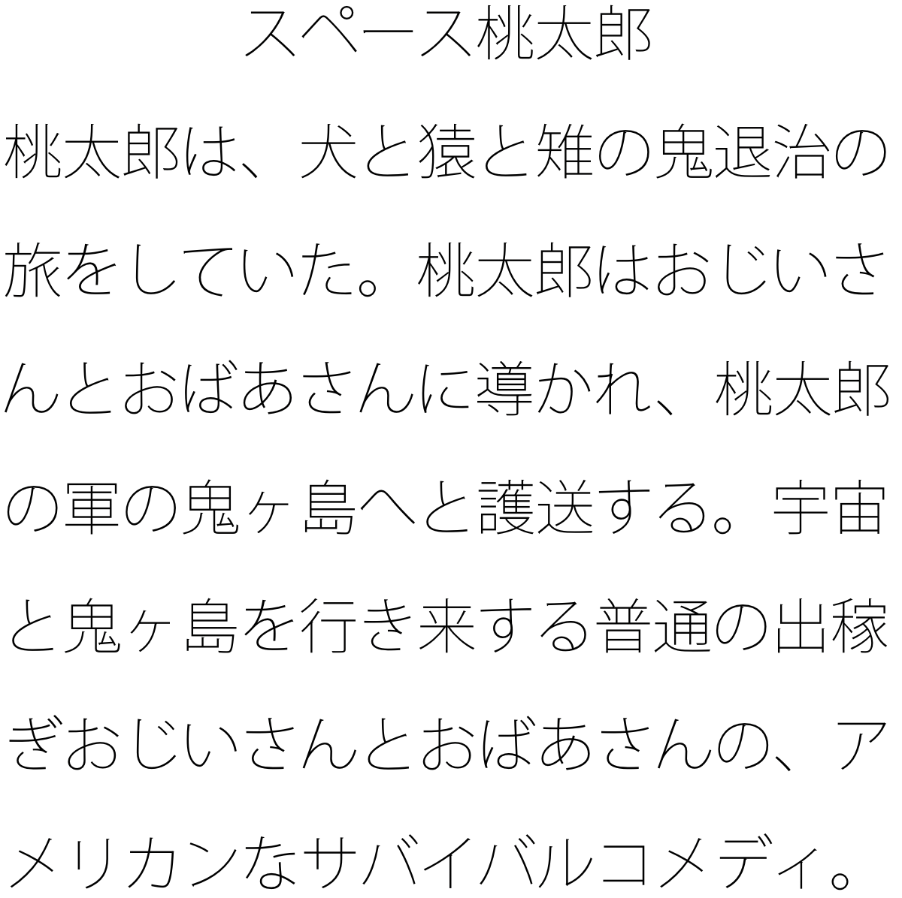
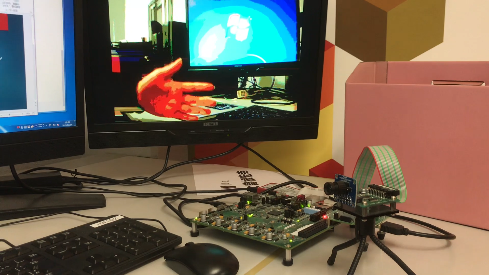
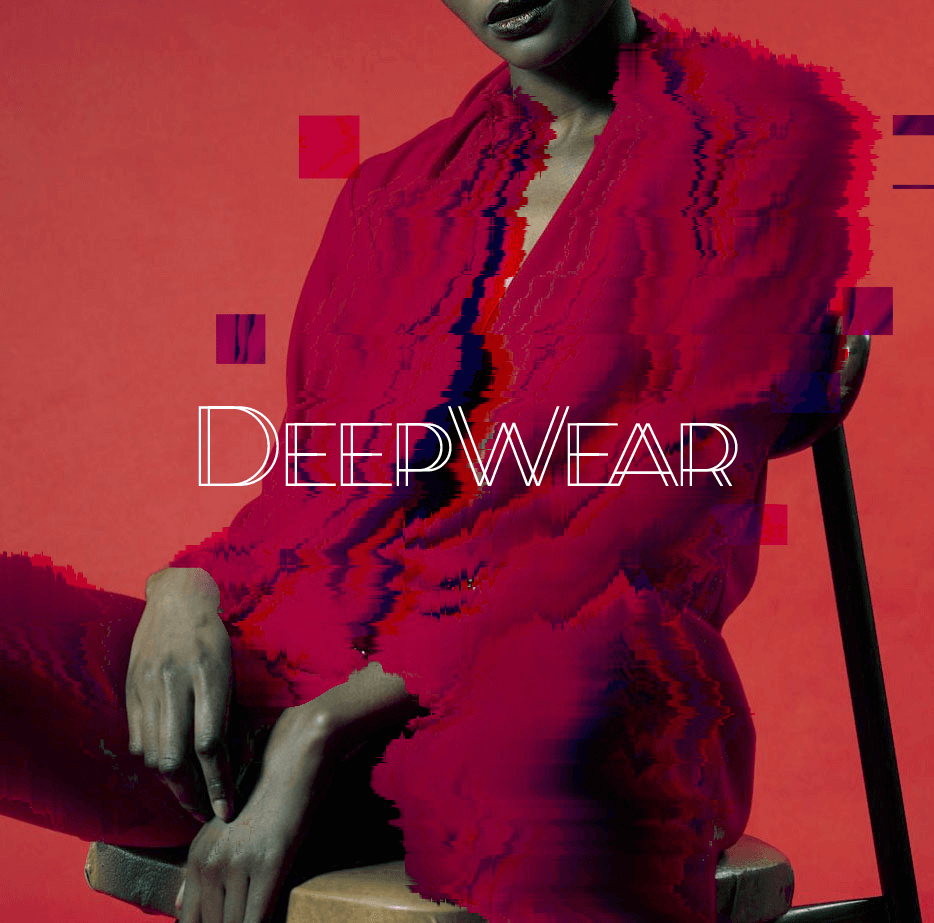
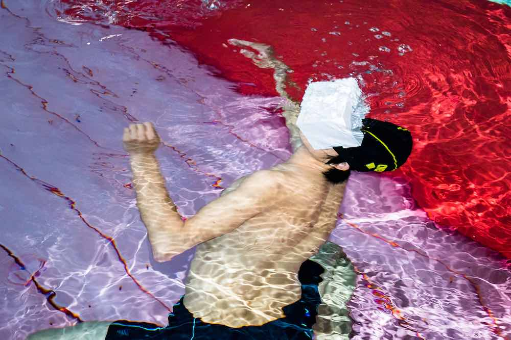
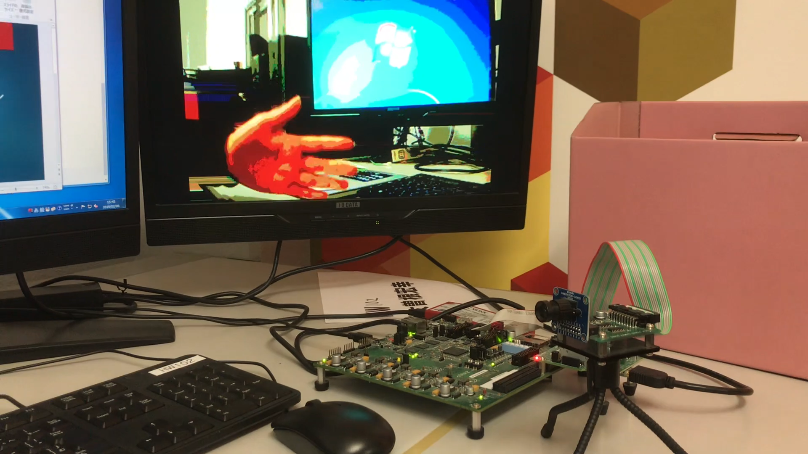
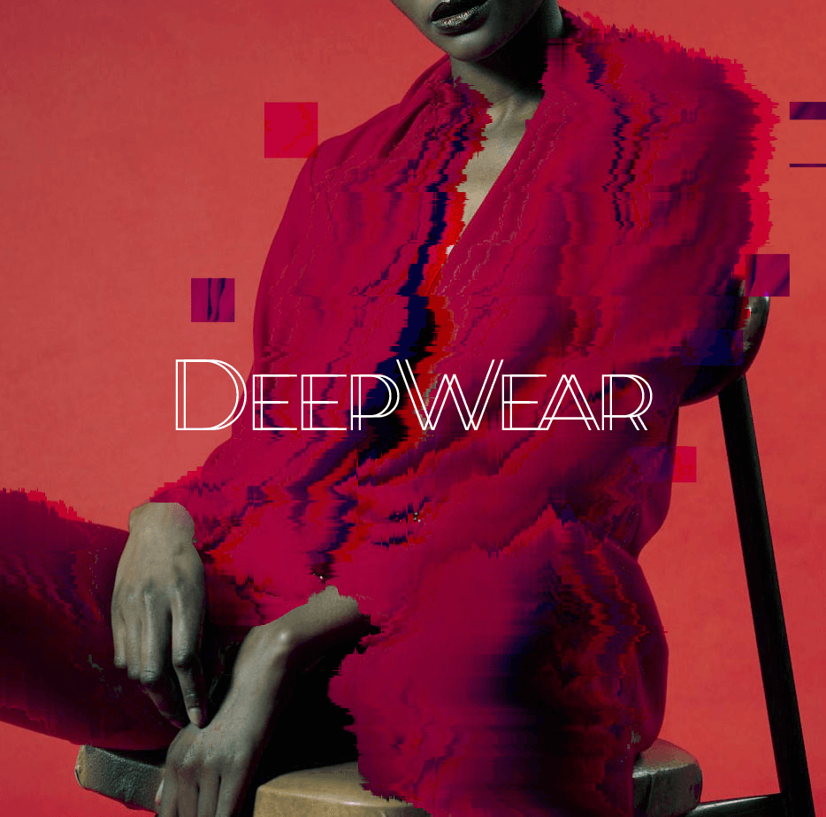
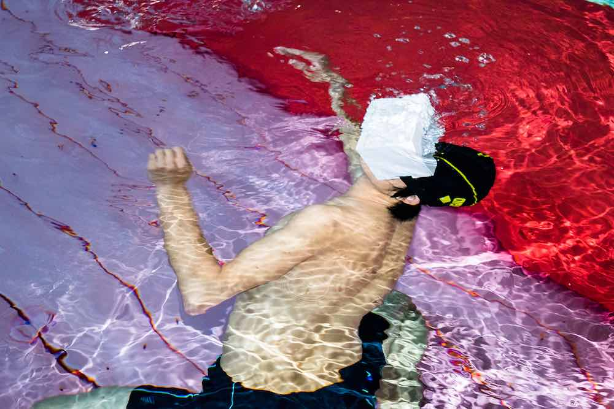
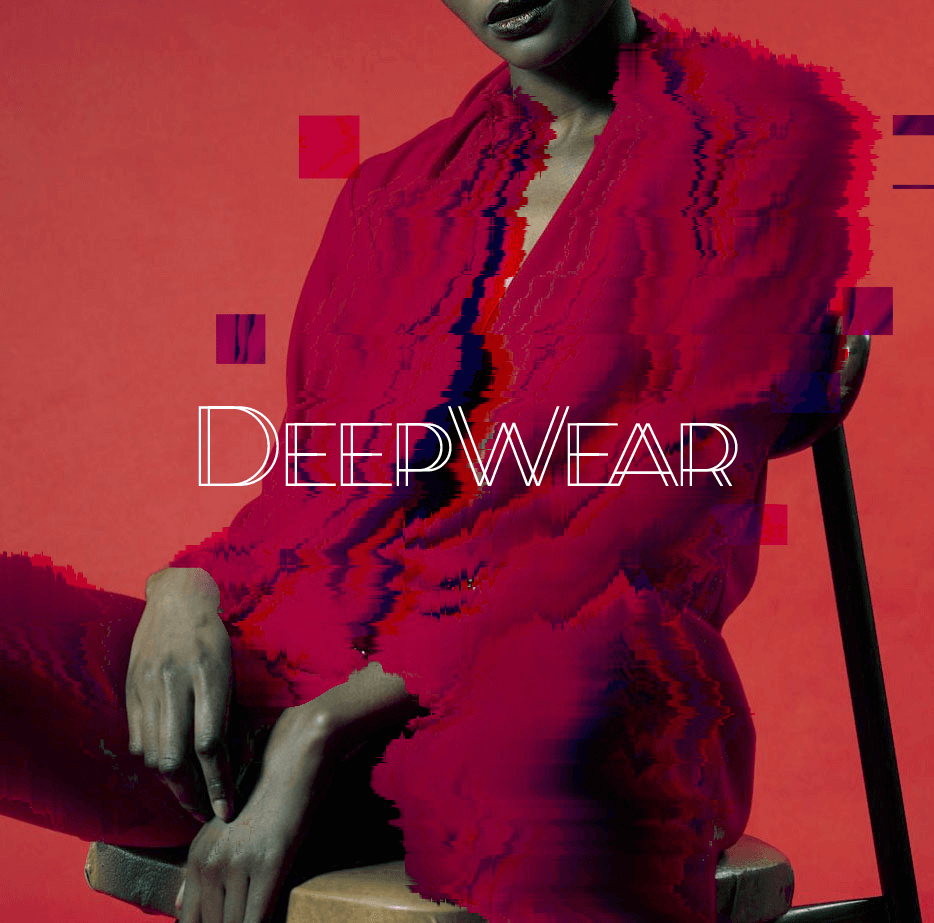
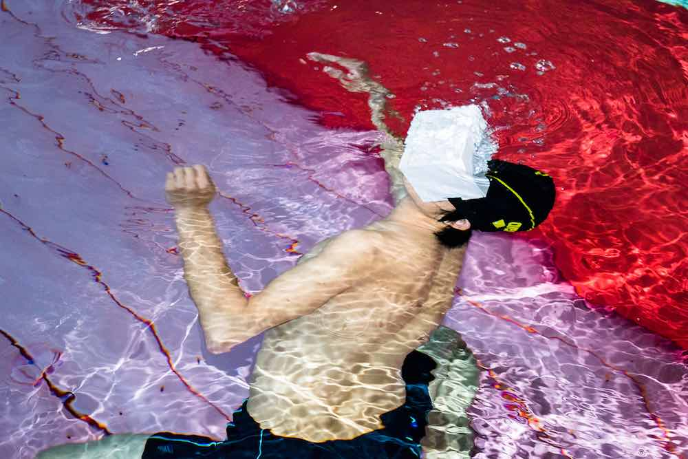
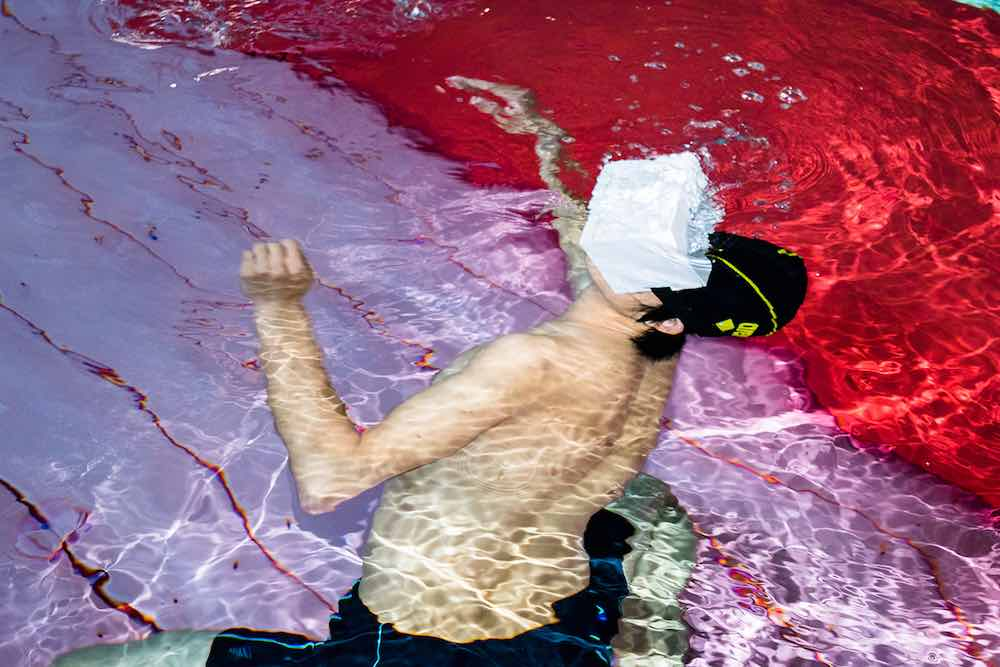

 Posterization of Captured Image by FPGA  DeepWear  Optimized HMD System for Underwater VR Experience  Self-publishing IBM QとBlueqatでゼロから始める量子コンピュータ (Starting to learn about Quantum Computer with IBM Q and Blueqat from Zero)
 DeepWear  Optimized HMD System for Underwater VR Experience  Self-publishing IBM QとBlueqatでゼロから始める量子コンピュータ (Starting to learn about Quantum Computer with IBM Q and Blueqat from Zero)
 Optimized HMD System for Underwater VR Experience  Self-publishing IBM QとBlueqatでゼロから始める量子コンピュータ (Starting to learn about Quantum Computer with IBM Q and Blueqat from Zero)
 Self-publishing IBM QとBlueqatでゼロから始める量子コンピュータ (Starting to learn about Quantum Computer with IBM Q and Blueqat from Zero)